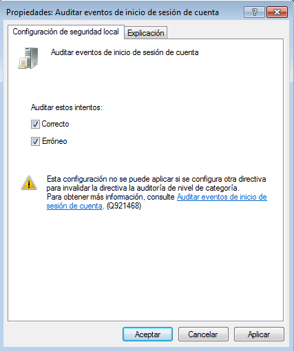
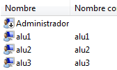
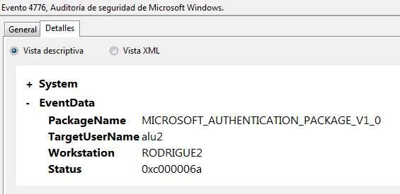
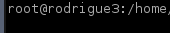
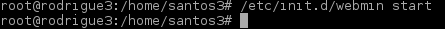
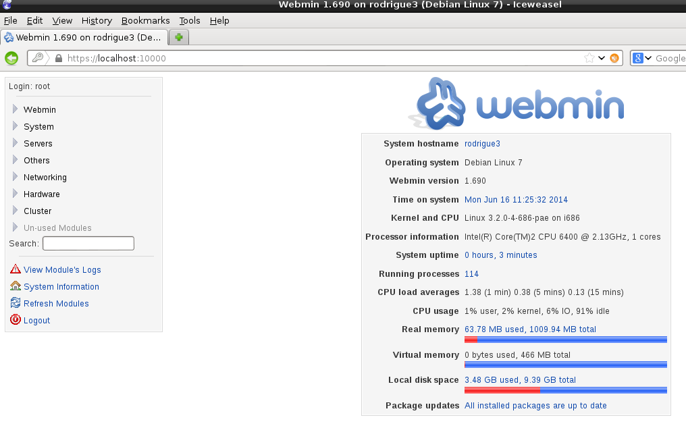
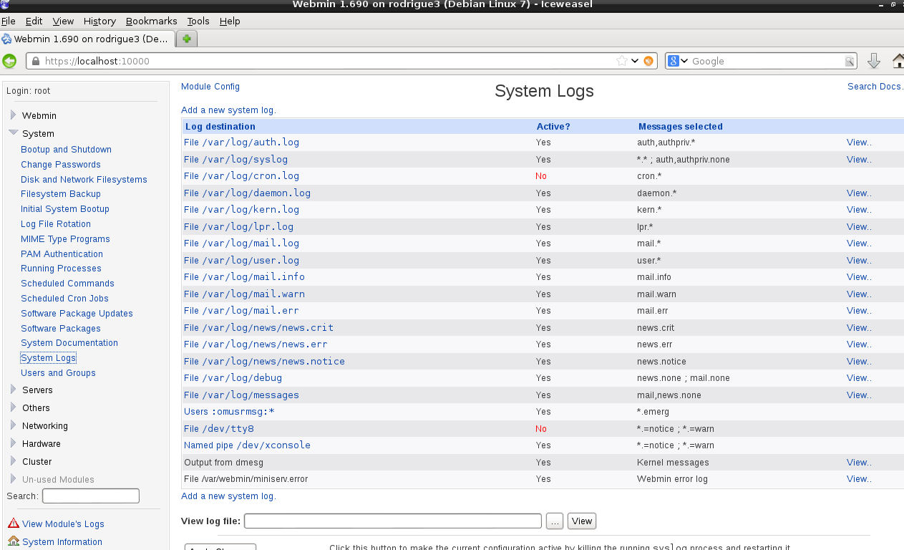

- Módulo: Sistemas Operativos
- Título del trabajo Registro de eventos.
- Componentes del grupo: Güinel Rodríguez García.
- Curso Académico: 2013/2014
- Fecha de entrega: 17 de junio de 2014
-Debemos activar unas directivas de seguridad.
-Creamos los usuarios:alu1 alu2 alu3
-Buscamos en el sistema, la herramienta visor de sucesos.

-El fichero de registro-windows se encuentra en la carpeta 'files'.
-Cambiamos el nombre de la máquina.
-Instalamos el programa 'webmin'.
-Cuando lo tengamos instalado, iniciamos el programa.
-Accedemos al programa Webmin, abrimos un navegador web y ponemos como URL "https://localhost:10000".
-Vamos a analizar los ficheros de log.
-Vamos a crear un fichero para configurar logrotate, con las especificaciones que nos presta el profesor.
-Vamos a generar muchos mensajes de log, para ello nos decargamos el scrip proporcionado por el profesor.